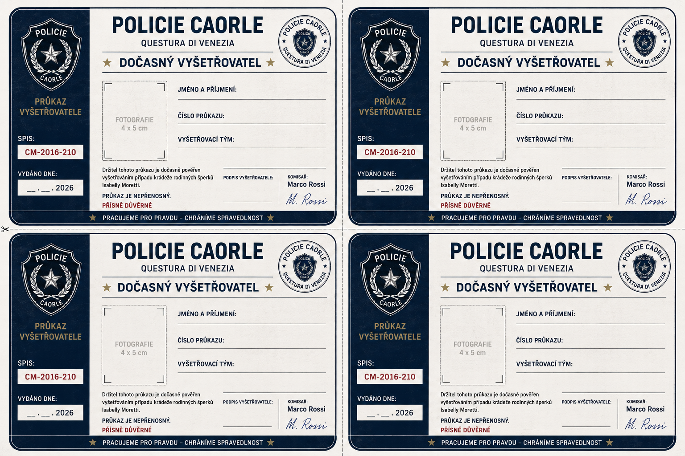

Průkaz vyšetřovatele
Vytiskněte tuto šablonu jednou pro každé dítě. Každý malý vyšetřovatel si doplní své jméno, nalepí fotografii a podepíše se.

Oprávnění držitele průkazu: Držitel tohoto průkazu je pověřen studiem policejního spisu CM-2016-210, výslechy podezřelých osob, vyhodnocením důkazů a předložením závěru vyšetřování. Tento průkaz je určen výhradně pro účely detektivní hry.
Komisař Marco Rossi, Policie Caorle